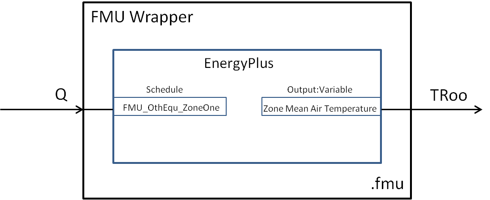
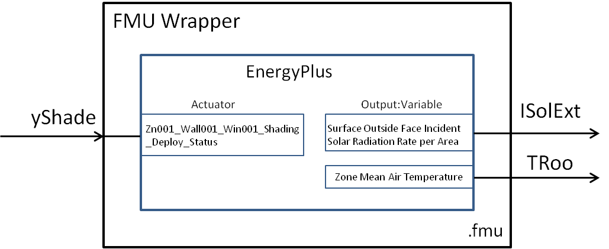

7. Best Practice¶
This section explains to users the best practice in configuring an EnergyPlus model for an FMU.
To export EnergyPlus as an FMU, four objects have been added to the EnergyPlus data structure. These objects are:
- The
ExternalInterface:FunctionalMockupUnitExport:From:Variableobject, which is used to map the outputs of the FMU to the EnergyPlus objectsOutput:VariableandEnergyManagementSystem:OutputVariable. - The
ExternalInterface:FunctionalMockupUnitExport:To:Schedule,ExternalInterface:FunctionalMockupUnitExport:To:Actuator, andExternalInterface:FunctionalMockupUnitExport:To:Variable, which are used to map the inputs of the FMU to EnergyPlus schedules, EMS actuators, and variables.
These objects are described in the Input/Output reference of the EnergyPlus manual.
7.1. Configuring an EnergyPlus model which uses the Schedule object¶
Suppose we like to export an EnergyPlus model of a room with an ideal HVAC system that adds heating or cooling to the zone as schedules, to maintain a certain room temperature.
Such an EnergyPlus model could be exported as an FMU with one input and one output. The input of the FMU will write to the heating/cooling time schedule, whereas the output of the FMU will read the room dry-bulb temperature.
The Energyplus model needs to contain the following three items:
- An object that instructs EnergyPlus to activate the external interface.
- EnergyPlus objects that read inputs of the FMU and send the values to EnergyPlus.
- EnergyPlus objects that read data from EnergyPlus and send the values to the outputs of the FMU.
The code below shows how to declare these objects in the IDF. To activate the external interface, we use:
ExternalInterface, !- Object to activate external interface FunctionalMockupUnitExport; !- Name of external interface
To define the input of the FMU, we use:
ExternalInterface:FunctionalMockupUnitExport:To:Schedule, FMU_OthEqu_ZoneOne, !- Name Any Number, !- Schedule Type Limits Names Q, !- FMU Variable Name 0; !- Initial Value
To define the output of the FMU, we use:
ExternalInterface: FunctionalMockupUnitExport:From:Variable, ZONE ONE, !- Output:Variable Index Key Name Zone Mean Air Temperature, !- Output:Variable Name TRooMea; !- FMU Variable Name
Along with the FMU’s output definition, the EnergyPlus output variable which corresponds to the FMU output needs to be specified in the IDF file:
Output:Variable, ZONE ONE, !- Key Value Zone Mean Air Temperature, !- Variable Name TimeStep; !- Reporting Frequency
These specifications are used in the example that is available in Examples/Schedule.
Configuration of an EnergyPlus model which uses the
Schedule.
{kind=link}
7.2. Configuring an EnergyPlus model which uses the EMS Actuator object¶
Suppose we like to export an EnergyPlus model of a room that has a shading controller.
The shading controller requires as input the shading
actuation signal yShade, and has as outputs the outside temperature TRoo
and the solar irradiation ISolExt that is incident on the window.
We will export such an EnergyPlus model as an FMU with
one input and two outputs. The input of the FMU will write to the shading actuation signal,
whereas the outputs will read the outside temperature TRoo and the solar irradiation ISolExt.
The code below shows how to declare these objects in the IDF. To activate the external interface, we use:
ExternalInterface, !- Object to activate external interface FunctionalMockupUnitExport; !- Name of external interface
To define the input of the FMU, we use:
ExternalInterface:FunctionalMockupUnitExport:To:Actuator, Zn001_Wall001_Win001_Shading_Deploy_Status, !- Name Zn001:Wall001:Win001, !- Actuated Component Unique Name Window Shading Control, !- Actuated Component Type Control Status, !- Actuated Component Control Type yShade, !- FMU Variable Name 6; !- Initial Value
To define the outputs of the FMU, we use:
ExternalInterface:FunctionalMockupUnitExport:From:Variable, WEST ZONE, !- Output:Variable Index Key Name Zone Mean Air Temperature, !- Output:Variable Name TRoo; !- FMU Variable Name ExternalInterface:FunctionalMockupUnitExport:From:Variable, Zn001:Wall001:Win001, !- Output:Variable Index Key Name Surface Outside Face Incident Solar Radiation Rate per Area, !- Output:Variable Name ISolExt; !- FMU Variable Name
Along with the FMU’s outputs definition, the EnergyPlus output variables which correspond to the FMU outputs need to be specified in the IDF file:
Output:Variable, Zn001:Wall001:Win001, !- Key Value Surface Outside Face Incident Solar Radiation Rate per Area, !- Variable Name TimeStep; !- Reporting Frequency Output:Variable, WEST ZONE, !- Key Value Zone Mean Air Temperature, !- Variable Name TimeStep; !- Reporting Frequency
These specifications are used in the example that is available in Examples/Actuator.
Configuration of an EnergyPlus model which uses the
EMS Actuator.
{kind=link}
7.3. Configuring an EnergyPlus model which uses the EMS Variable object¶
This configuration is almost the same as in the previous example with the only
difference being that the shading actuation signal will be written to an EMS variable
yShade that can be used in an EMS program.
To define the input of the FMU, we use:
ExternalInterface:FunctionalMockupUnitExport:To:Variable, yShade, !- Name yShadeFMU, !- FMU Variable Name 6; !- Initial Value
These specifications are used in the example that is available in Examples/Variable.
Please see the Input/Output reference of the EnergyPlus manual.
Please read Installation and Configuration to see how to generate an FMU.